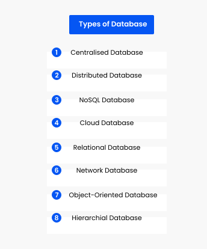

Types of DBMS
There are various types of databases used for storing different varieties of data:
1. Centralized Database
It is the type of database that stores data at a centralized database system. It comforts the users to access the stored data from different locations through several applications. These applications contain the authentication process to let users access data securely. An example of a Centralized database can be Central Library that carries a central database of each library in a college/university.
2. Distributed Database
Unlike a centralized database system, in distributed systems, data is distributed among different database systems of an organization. These database systems are connected via communication links. Such links help the end-users to access the data easily. Examples of the Distributed database are Apache Cassandra, HBase, Ignite, etc.
3. Relational Database
This database is based on the relational data model, which stores data in the form of rows(tuple) and columns(attributes), and together forms a table(relation). A relational database uses SQL for storing, manipulating, as well as maintaining the data. E.F. Codd invented the database in 1970. Each table in the database carries a key that makes the data unique from others. Examples of Relational databases are MySQL, Microsoft SQL Server, Oracle, etc.
4. NoSQL Database
Non-SQL/Not Only SQL is a type of database that is used for storing a wide range of data sets. It is not a relational database as it stores data not only in tabular form but in several different ways. It came into existence when the demand for building modern applications increased. Thus, NoSQL presented a wide variety of database technologies in response to the demands.
5. Cloud Database
A type of database where data is stored in a virtual environment and executes over the cloud computing platform. It provides users with various cloud computing services (SaaS, PaaS, IaaS, etc.) for accessing the database.
6. Object-oriented Databases
The type of database that uses the object-based data model approach for storing data in the database system. The data is represented and stored as objects which are similar to the objects used in the object-oriented programming language.
7. Hierarchical Databases
It is the type of database that stores data in the form of parent-children relationship nodes.
8. Network Databases
It is the database that typically follows the network data model. Here, the representation of data is in the form of nodes connected via links between them. Unlike the hierarchical database, it allows each record to have multiple children and parent nodes to form a generalized graph structure.